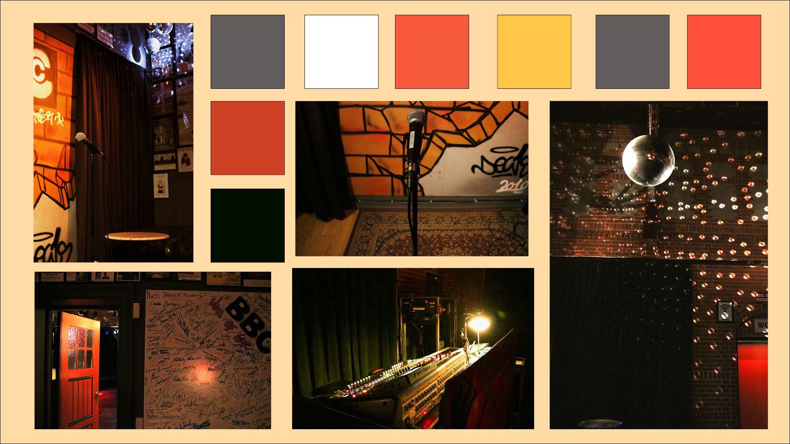

Tema 2: Grundlæggende Indhold
I tema 2 fik vi en masse information om videointerviews. Meget af det var det helt grundlæggende som det gyldne snit og forskellige perspektiver. Noget som jeg hele tiden havde bag ørerne når jeg skulle placer kamereaet i de interviews jeg lavede.
B-rools var også noget der meget essentielt i dette tema. Det var noget vi hele tiden skulle tænke over når vi filmede de forskellige projekter. Så vi kunne have nogle smooth transactions mellem de forskellige klips. Hvor en person snakker og man får måske et b-roll af det han snakker om.
Min egen video havde jeg ikke regnet med nogle ville se, så den er lavet lidt for sjov. Jeg har dog taget alt det viden vi fik af viden i løbet af temaet i brug. Især det med at have på lyd en god mikrofon fremfor den iphonen tilbyder. Da mikrofonen er helt tæt på og dermed ikke samler så meget baggrundsstøg op.

Click på youtube knappen for, at se den samme video, men bare på youtube, hvor man også kan se den smukke thumbnail fremfor det ansigt jeg har i videoen der.
Redesign af Lygten Station
I redesign forløbet, havde min gruppe og jeg været ude og kontakte Lygten Station. Da deres hjemmeside ikke var det pæneste og kunne være forvirrende at se på.
Vi fik givet et par dage vi kunne filme og vi fik ellers bare i gang med storyboards til hvad der skal filmes og gjorde kontrakter og den slags klar.
Vi havde en masse shots vi gerne vil tage. I mange forskellige vinkler. Der var også en masse billeder vi skulle tage i både horizontalt og vertikalt, så det nemmere kunne arbejdes med i mobil og desktop hjemmesider.
Det er meget vigitgt for vores video, at vi får udtrykt, hvad Lygten Stationen er. Dermed får den her hyggelige og rummelige følelse med i vores video. Jeg synes helt klart videoen snakker for sig selv. Den er fantastisk i det vi præcis får udtrykt den stemning der er på Lygten Station
Vores moodboard kan helt klart også med til at vise den stemning der er på Lygten Station.
Redesign af hjemmesiden
Det var vigtigt at de svar vi fik, skulle ændres når vi lavede vores redesign. Da mange af vores testpersoner ikke vidste hvad hjemmesiden havde med at gører.
Det fik vi ihvertfald ændret, som der kan ses her på vores bert test.
Der nogle andre test vi også har lavet, bl.a en 5 sekunders test. Kan findes i dokumentationsittet.